Explore Marseille
A Brief History
Marseille, founded as the Greek colony of Massalia around 600 BCE, has remained France's major Mediterranean harbour through Roman, medieval, and colonial trade. Fort Saint-Jean, the Old Port, and Notre-Dame de la Garde overlook immigration from North Africa and southern Europe that reshaped the city's quarters, markets, and civic life. Municipal archives, parish records, and surviving architecture help explain how the city connected to wider regional trade routes, court patronage, and modern civic rebuilding after industrial and wartime change.
Attractions Map
Top Sights & Activities
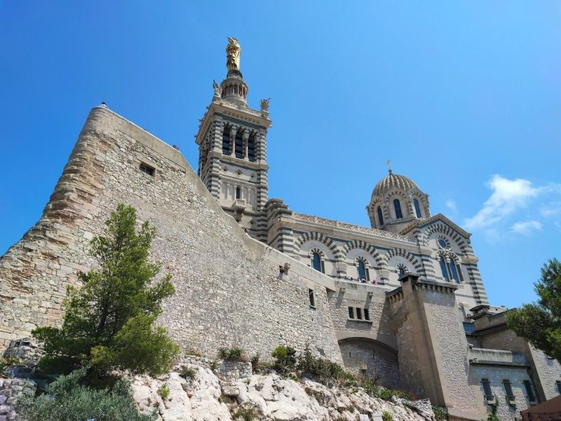
Notre-Dame de la Garde
The Basilica of Notre-Dame-of-la-Garde at Marseille is a grand basilica located at the city's highest point, featuring a golden statue of the Virgin Mary by Lequesne. For those seeking a luxurious stay, there are options like the InterContinental Marseille and Sofitel Marseille Vieux Port with views of the Old Port. Alternatively, visitors can opt for boutique accommodations such as Le Petit Nice Passedat or C2 Hotel for a more intimate experience.
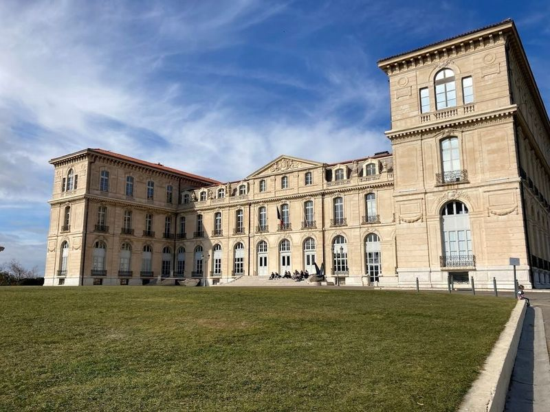
Palais du Pharo
The Palais du Pharo, constructed in 1858 for Napoleon III, now serves as a grand conference center with picturesque gardens that overlook the seafront. The palace's exceptional architecture and historical significance make it a notable landmark visible from the Vieux-Port. Its elevated position offers views of the city's monuments, including Fort Saint-Jean, Mucem, and Cathedrale de la Major.
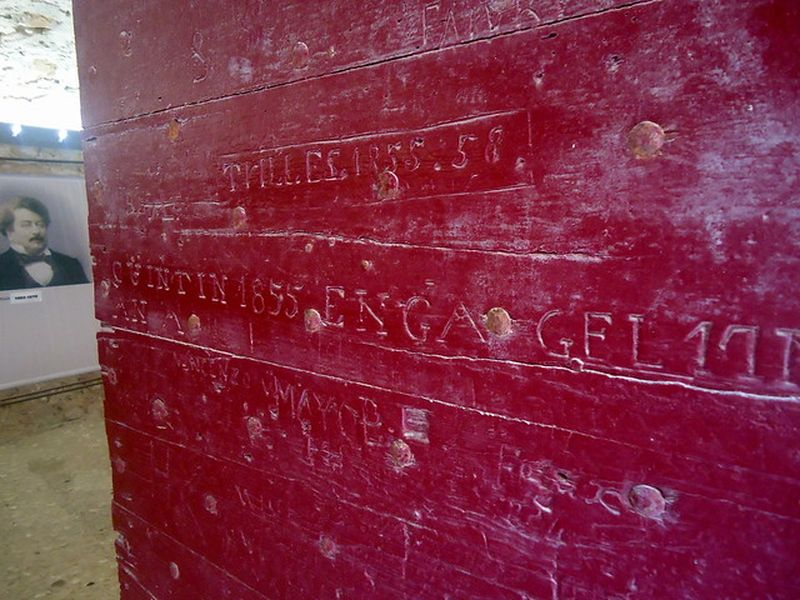
Château d'If
The Château d'If is a 16th-century fortress on a small island in Marseille's bay, built under François I to guard the entrance to the Old Port. Imprisonment cells and gun platforms recall its later use as a state prison, famously fictionalised in Dumas's The Count of Monte Cristo. Ferries from the Vieux-Port reach the island for guided visits of the keep and ramparts.
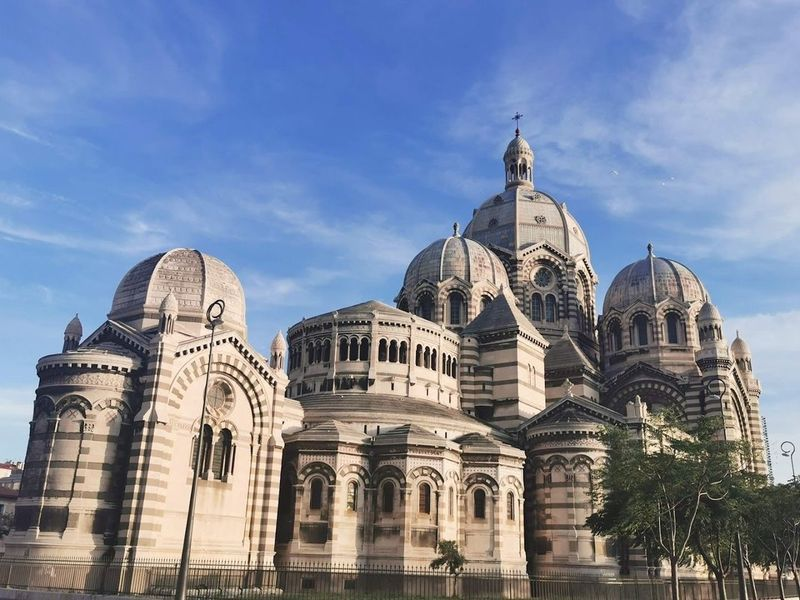
Cathédrale La Major
Cathédrale La Major is a grand 19th-century neo-Byzantine cathedral located in the historic Le Panier district of Marseille. Its exterior is a majestic blend of Byzantine and Romanesque styles, with green and white limestone covering the monument. The opulent interior features marble, mosaics, and murals that create a striking contrast to the outer surface.
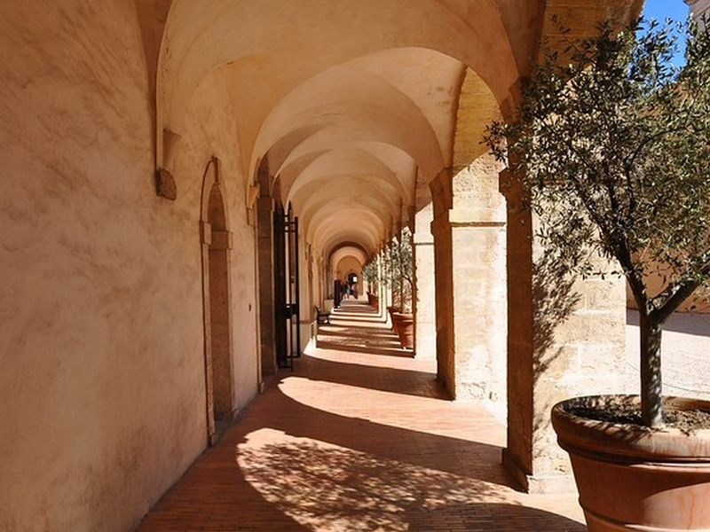
Old Charity Center
A former almshouse that now hosts museums and cultural institutions. The baroque architecture and historical exhibitions are noteworthy. The site forms part of Old Charity Center's documented civic and cultural landscape within Marseille, with archives and visitor information available from municipal or regional heritage authorities.
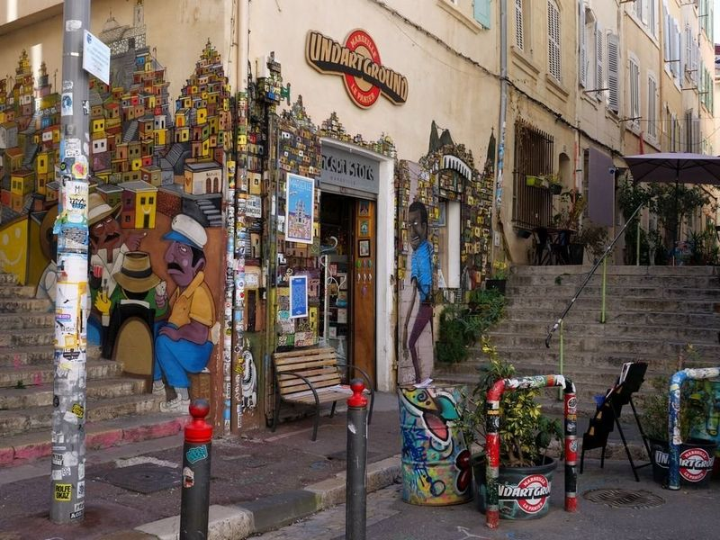
Le Panier Marseillais
Le Panier Marseillais is the oldest district in Marseille, known for its historic charm and vibrant atmosphere. Once a neighborhood of fishermen and immigrants, it now boasts cobblestoned streets, colorful buildings, and artisan shops. The area is reminiscent of Montmartre in Paris and offers a mix of grit and charm that's truly captivating. Visitors can explore Provencal-style buildings with colorful facades, discover street art works, and enjoy numerous cafes and alternative clubs.
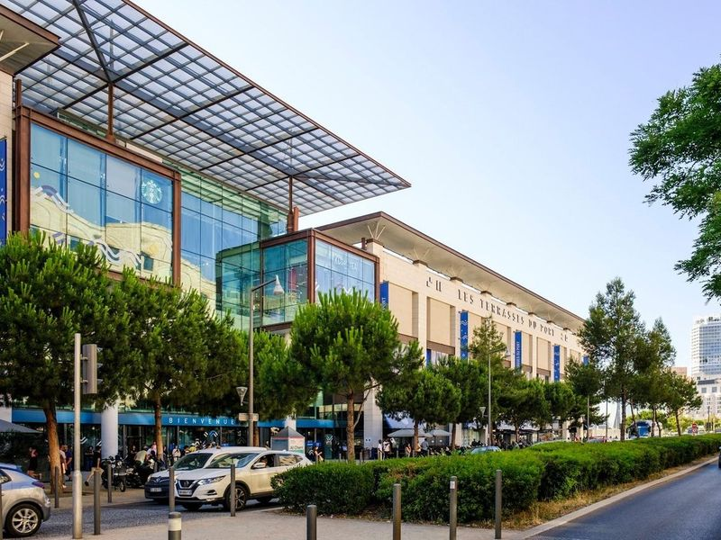
Les Terrasses du Port
Nestled near the Vieux-Port and easily reachable via public transport, Les Terrasses du Port is a vibrant shopping destination in Marseille that offers more than just retail therapy. This bustling center features a diverse array of shops showcasing both local and international brands, making it a perfect spot for fashion enthusiasts. But what truly sets Les Terrasses du Port apart is its rooftop terrace, which spans an impressive 2,600 square meters.
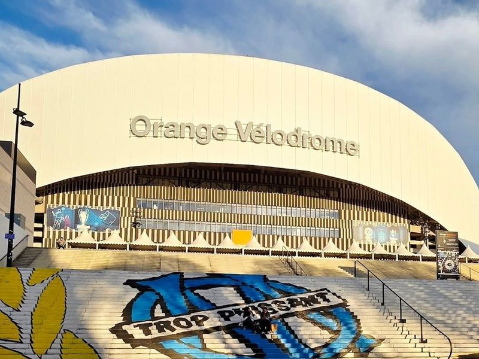
Orange Vélodrome
The Orange Vélodrome is a celebrated landmark in Marseille, renowned for its striking undulating roof and rich sporting history. Originally built as a cycling track in 1937, this stadium has evolved into one of France's premier sports venues, boasting a capacity of 67,000 after its renovation in 2014. It serves as the proud home of Olympique de Marseille and has hosted significant events like the FIFA World Cups in 1938 and 1998.
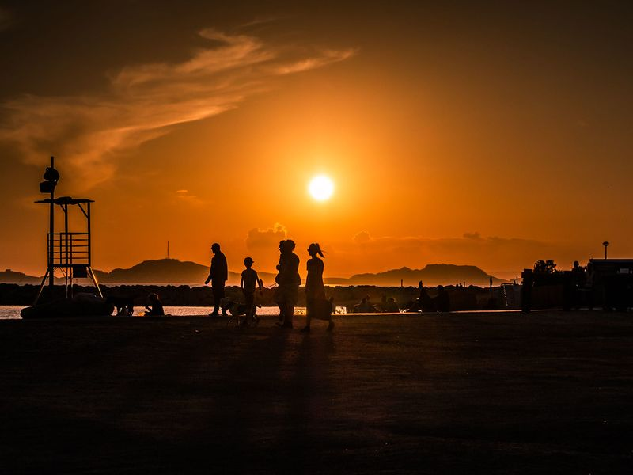
Escale BORELY
A vibrant beachfront area with restaurants, bars, and shops. It's a popular spot for both locals and tourists to relax by the sea. The site forms part of Escale BORELY's documented civic and cultural landscape within Marseille, with archives and visitor information available from municipal or regional heritage authorities.
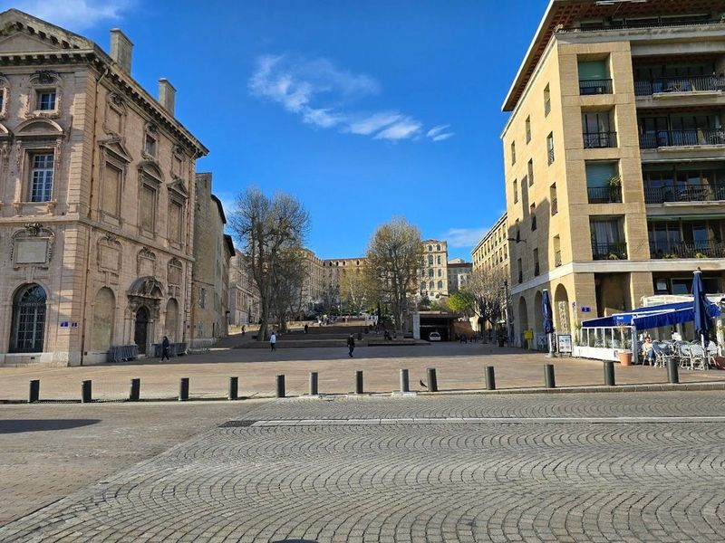
Old Port of Marseille
The Old Port of Marseille, or Vieux Port, is a captivating blend of history and culture that has thrived for over 2,600 years. Established by the Phoenicians around 600 BC as the colony of Massalia, it evolved into a bustling Mediterranean trade hub before becoming part of the Roman Empire and later embracing Christianity in the 5th century.
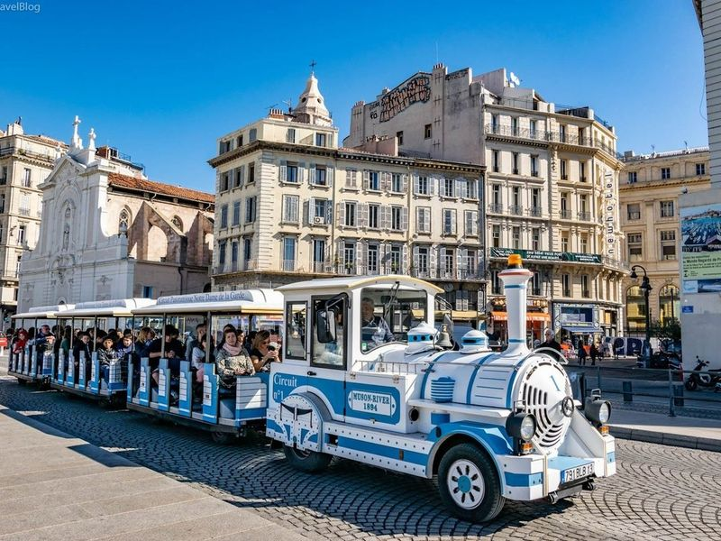
Les Petits Trains de Marseille
Les Petits Trains de Marseille offer a delightful way to explore the city, especially for families with kids. The charming little train resembles an old steam locomotive and provides an entertaining and educational tour of Marseille's key attractions and historical sites. With three different routes available depending on the season, visitors can enjoy narrated tours that cover the Corniche, Old City, and even take them up to the famous hilltop church, Notre-Dame-de-la-Garde.
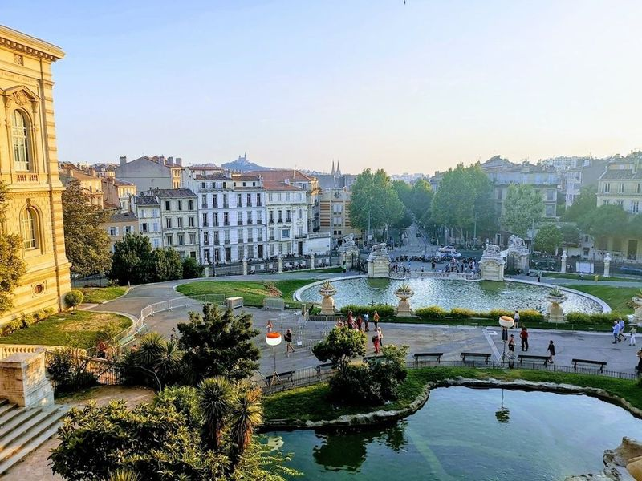
Palais Longchamp
Palais Longchamp, a grand monument built in the mid-1800s, stands as a tribute to the completion of an impressive canal construction project in Marseille. The building's architecture combines Baroque, Roman, and Oriental styles and features a sculpture fountain at its center. Visitors can explore the Musee des Beaux-Arts de Marseille and Le Museum d'Histoire Naturelle located within the palace complex.
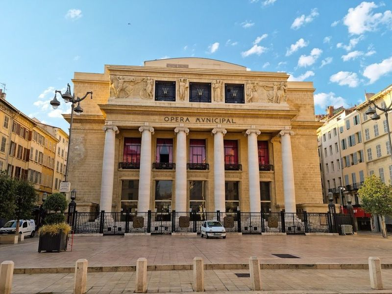
Opéra de Marseille
Located in the upscale area behind Le Vieux Port, Marseille's Opéra de Marseille is a historic opera house founded in 1787. It boasts architecture, luxurious furnishings, and excellent acoustics. The opulent interior features ornate decor and hosts a resident company that stages operas, ballets, and other performances throughout the year. The theater provides a cozy environment with a respectful audience.
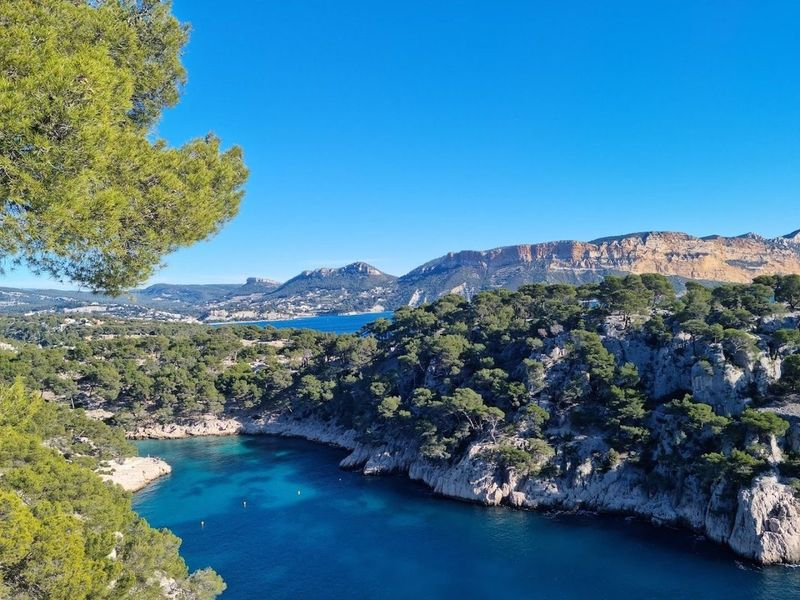
Parc national des Calanques
Parc national des Calanques, established in 2012, is a natural reserve located in the Provence-Alpes-Cote d'Azur region. Encompassing both land and sea areas, it spans over 8,500 hectares of land across Marseille, Cassis, and La Ciotat, along with 43,500 hectares of marine territory. This park boasts remarkable biodiversity with numerous protected terrestrial and marine species.
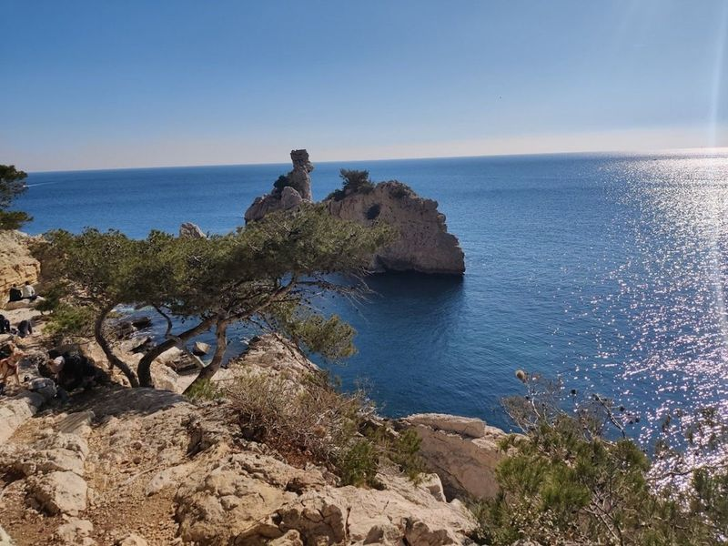
Belvédère de Sugiton
Belvédère de Sugiton offers a wonderful hiking experience with views of Calanque de Sugiton and Calanque de Morgiou. The trail is well-maintained and suitable for all ages, making it a great option for families. It's recommended to bring water and food for a picnic while enjoying the epic views from the viewpoint. The hike takes about 30 minutes from the Luminy trailhead, providing an excellent opportunity to immerse in nature.
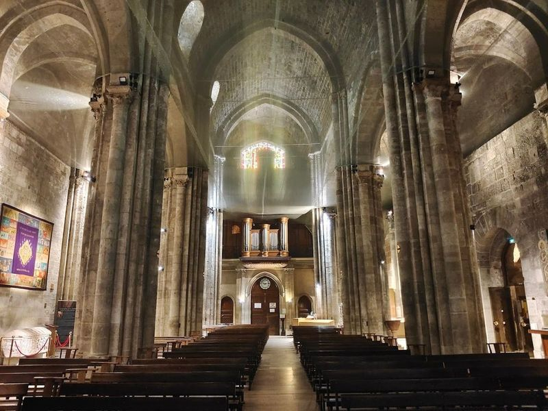
Abbaye Saint-Victor
Abbaye Saint-Victor is a fortified abbey in Marseille, founded by St. Cassian and built over a 5th-century crypt housing his sarcophagus. The abbey has a rich history dating back to the first century, with ties to French soldier turned martyr Victor of Marseilles. Over the years, it has served as both an abbey and a fort, playing various roles throughout its history.
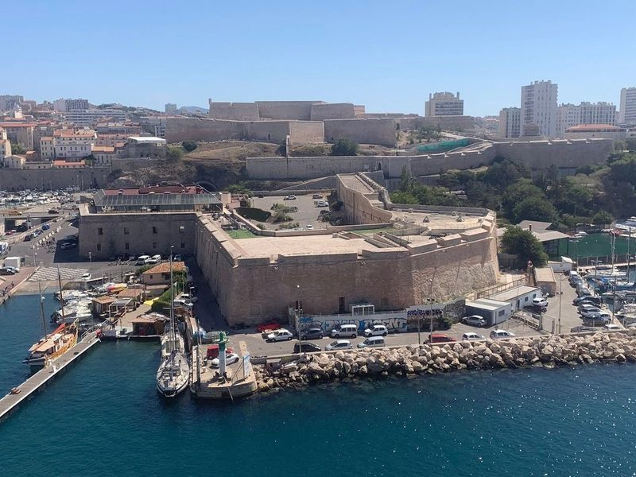
Citadelle de Marseille (Fort Saint-Nicolas)
Citadelle de Marseille, also known as Fort Saint-Nicolas, is a 17th-century fortress that overlooks the Old Port of Marseille. Initially built to protect against rebellious uprisings in the city rather than foreign invasions, it offers panoramic views of the port and the city.